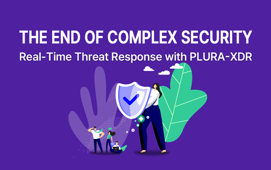

고객 실제 사례
고객 환경에서 확인한 결과입니다. 고객명과 도입 범위, 공개 가능 자료를 확인합니다.
SHOW THE EVIDENCE
실제 제품 화면, 공개 기능 시연, 설명용 시나리오를 구분해 제공합니다. 어떤 환경에서 무엇을 관측하고 어떤 조치를 확인했는지 함께 살펴보세요.
EVIDENCE TYPES
고객 환경에서 확인한 결과입니다. 고객명과 도입 범위, 공개 가능 자료를 확인합니다.
정해진 환경과 조건에서 공격·정상 행위를 재현하고 결과를 확인한 자료입니다.
특정 기능의 화면과 동작을 보여줍니다. 모든 환경에서의 성능 보장과는 다릅니다.
대응 흐름을 이해하기 위한 예시입니다. 실제 고객 사건이나 시험 통과 기록이 아닙니다.
PUBLIC PRODUCT SCREENS
아래 이미지는 기존 공개 홈페이지에 포함된 공개 제품 화면입니다. 새 홈페이지의 예시 화면과 구분합니다.
제품 버전과 수집 구성에 따라 표시 항목이 달라질 수 있습니다. 홈페이지 v7은 웹사이트 개편 버전이며, 제품 콘솔의 버전 변경을 뜻하지 않습니다.
OFFICIAL DEMONSTRATIONS

VALIDATION CHECKLIST
| 확인 항목 | 검토할 내용 |
|---|---|
| 환경 | 제품·에이전트 버전, 운영체제, 배포 방식, 설치 및 수집 조건 |
| 시나리오 | 재현한 행위와 정상 업무, 수행 시점, 확인하려는 질문 |
| 관측 범위 | 원문 로그, 호스트 이벤트, 실제 확보된 포렌식 자료 |
| 분석 결과 | 탐지 근거, 연관 관계, 확인 사실과 미확인 사항 |
| 실행 결과 | 권고·승인·실제 조치의 구분, 대상과 결과, 업무 영향 |
| 한계 | 관측하지 못한 범위, 적용하지 않은 조치, 추가 확인 과제 |
검증 범위와 결과를 기록할 수 있는 마크다운 양식
기업 환경에서 검토할 데이터와 시나리오, 대응 범위를 함께 협의합니다.